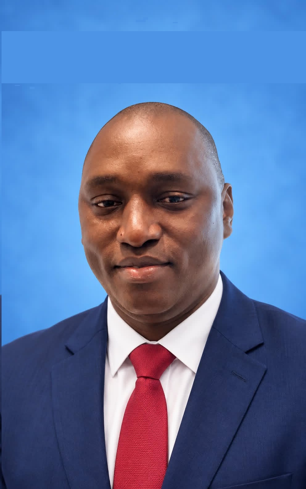

Meet our founder
Michael Fayamba Marah
Founder & Principal Consultant · Development Specialist · Researcher
Michael Fayamba Marah, also known professionally as Michael Marah, is a Sierra Leonean development specialist and researcher. He founded People & Humanity Consult (P&H Consult), whose work spans education, public health, governance and institutional strengthening.
Professional background
Marah's work spans programme management, policy research, monitoring, evaluation, accountability and learning (MEAL), and institutional development. His experience includes work with the British Council, the Education Outcomes Fund and Partners in Health. Through P&H Consult, he supports research, strategy and development practice.
Education
He holds an MSc in Development Management from American University's School of International Service, and an MBA in Finance and a BSc in Accounting and Finance from the University of Makeni, Sierra Leone.
Research and publications
His research interests include African development, governance, institutional reform and education. Selected publicly available works:
- Research on electoral system design and democratic representation (2025)
- Research on electoral systems and representation (2026)
- Commentary on constitutional reform in Sierra Leone (2026)
Follow each DOI for its authoritative publication title and metadata.
Writing
Marah is developing Dust and Democracy: The Road Yet Taken, a book project exploring governance and development in Africa. It is a work in progress, not a published book.